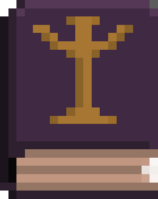
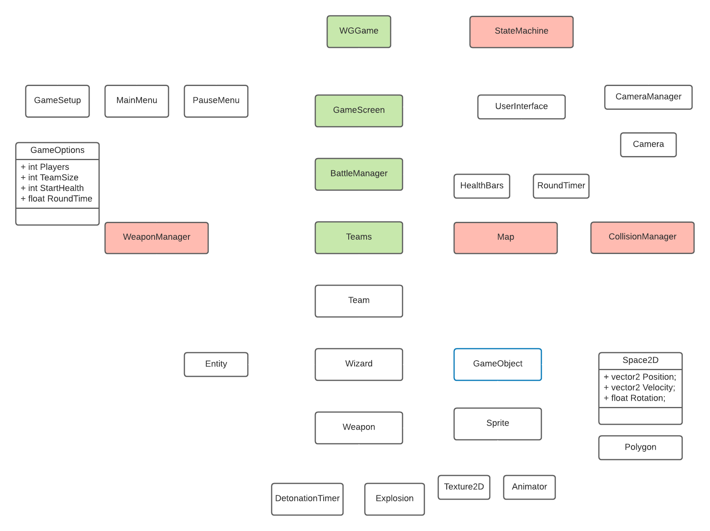

Architecture
You might wonder why this project is "WizardGrenade2" on GitHub - For WG1 I did what all green programmers do and got carried away trying to make things work (i.e make fireballs bounce around) and didn't think about the structure of my program.
I made the rookie error of having my GameObject class handle everything from physics to drawing to collisions; I essentially packed too much functionality into one class which resulted in a very tightly-coupled application. So I started from scratch with more of a plan.
Below is a UML diagram, approximating the architecture of WizardGrenade2. The classes in red are Singletons which I know can be a touchy subject! I decided to use them for classes which would only have a single instance required (such as the StateMachine) and needed to be referenced from multiple different areas of the application - I think I could improve this in the future but this was how I chose to go about it at the time.
The free account on LucidChart restricts the number of objects so it isn't complete but gives the idea, as UML diagrams should. The basic structure is as follows:

- WGGame is the main game class. This handles the game loop logic, determines whether we are in the menu, running the game, or if the game is paused. It also contains the CameraManager which determines the origin matrix (i.e. drawing UI, menus) and the transform matrix (i.e. in game)
- The GameSetup is a menu where the game options and map are chosen - once selected a small GameOptions class is injected as a constructor to GameScreen along with the ContentManager.
- The GameScreen passes on the GameOptions to the BattleManager which loads the respective number of Teams and sets the number of Wizards per team; each Team calculates their total health and feeds this back to the GameScreen which primes the UserInterface with the team HealthBars and the round time
- Teams handles the initial placement of the Wizards, and after that polls the StateMachine for the active GameState and determines which Team and Wizard are active.
- Each Team has a different Sprite so this is where each Wizard is drawn and where the collective health is tallied. The movement method is only called for the active Wizard of the active Team.
- Improving on my last design, the Wizard class handles movement, damage and animation states but has a GameObject (see below). The Wizard also contains an Entity which has health, a "Damage()" method and checks if the Wizard is dead or not.
- The GameObject class handles the physics (see Physics) and draws the Sprite at the correct position. In hindsight I could have decoupled this further by containing the Sprite within GameObject rather than inheriting from it.
- Another improvement on the first design was having the WeaponManager handle all the weapons and simply draw them at the position of the active Wizard. The WeaponManager is updated by the BattleManager and takes the active wizard position in it's Update() method.
- The WeaponManager class is one of the dreaded Singletons which acts as a conduit between the Wizards and the Weapons. The WeaponManager is Lazy Initialised so it is only called once the teams are loaded; a list containing all Wizards is collected by Teams and passed to the WeaponManager. Then when a Weapon explodes near a Wizard the WeaponManager can call AddVelocity() on the Wizard (or any other GameOjbect) and make them react to the explosion
- The explosion imparts a velocity value as function of distance from the explosion, which causes variable amounts of damage depending on how close the Wizard was to the explosion
- The way each Weapon interacts with Wizards is different, hence they contain virtual methods to be overriden by the specific weapon class. I intend to prepare another section on how these weapons work in the future.